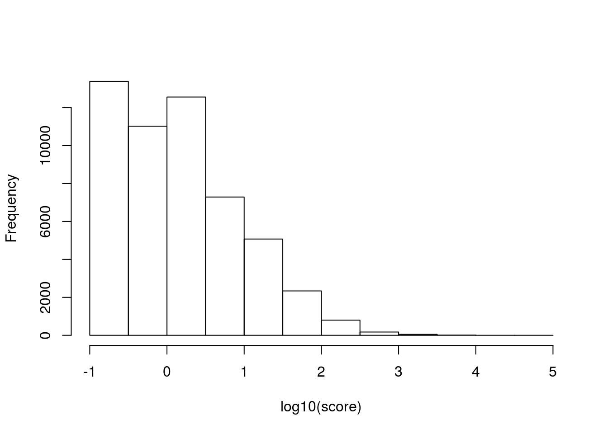
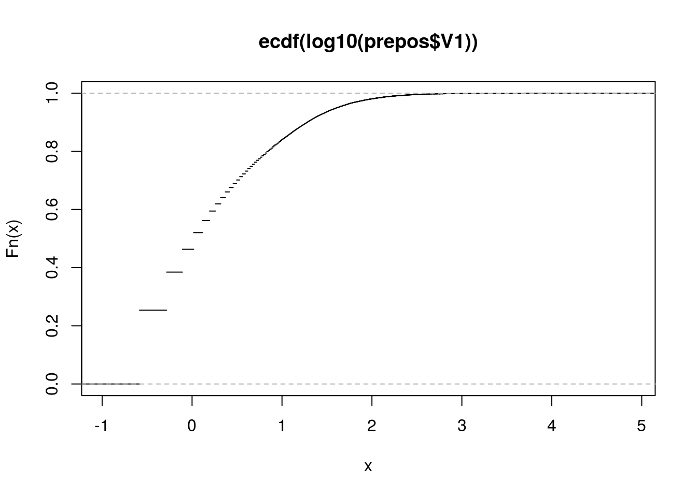

Obtained from hg19.cage_peak_phase1and2combined_tpm.osc.txt.gz - CAGE peak based expression table (RLE normalized) for human samples [see edgeR documentation for further details about normalization method]
Only fetal brain is extracted (Zhongshan’s part)
Obtained data from /project2/xinhe/zhongshan/noncodingRNA/FANTOM/hg19.cage_peak_phase1and2combined_tpm.osc.txt.ordered.CNhs11797
All peaks with zero entry are defined as negative sequences.
$ cat fantomFetalBrainCage.bed |awk -F"\t" -v OFS="\t" '{if($5==0) print $1,$2,$3,$5}' > fantomFetalBrainCage.negative.bedObtain the ‘pre-positive’ sequences by extracting all sequences with non-zero entry.
$ cat fantomFetalBrainCage.bed |sort -k5 -nr|awk -F"\t" '{if($5!=0) print $5}' > fantomFetalBrainCage.pre-positive.bedprepos <- read.table('../data/fantomFetalBrainCage.pre-positive.bed')
hist(log10(prepos$V1), xlab = 'log10(score)', main = '')
Fn <- ecdf(log10(prepos$V1))
plot(Fn)
cutoff.log <- c(0, 1, 2)
df <- data.frame(cutoff = 10^cutoff.log, topNprecent = 1 - Fn(cutoff.log))
pander(df)| cutoff | topNprecent |
|---|---|
| 1 | 0.5369 |
| 10 | 0.1603 |
| 100 | 0.01964 |
$ cat fantomFetalBrainCage.bed |sort -k5 -nr|awk -F"\t" -v OFS="\t" '{if($5>10) print $1,$2,$3,$5}' > fantomFetalBrainCage.gt10.bed
$ cat fantomFetalBrainCage.bed |awk -F"\t" -v OFS="\t" '{if($5==0) print $1,$2,$3,$5}' > fantomFetalBrainCage.eq0.bed